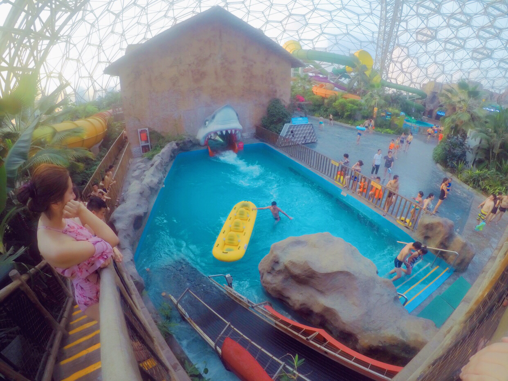

津门又探昔时趣,别意再绵孔酒家
这次的毫不犹豫的飞奔到曾经路过没有跳下火车的地方-----天津。第二次带着GoPro5出行，来衬托一下气氛。
又是这种圆圆的像糖豆一样的地铁卡，看到上边醒目的“Single Journey Ticket”我就会感到丝丝凉意，总有一种一去不回，随处流浪的感觉。 随着近两年流行的“原谅色”，我也是更加醉的不行，咱们是环保装行吧，我只能说，天津，你滴，可以的。。。

一个人背着沉重的包裹，对，每次出行我都会带上毛巾，牙刷，创口贴，风油精，白云山（什么鬼，就是止血药），可接触杀菌液，简直是上战场， 随后到了酒店扔下后整个人就瘫了，谁让我还带了两个充电宝，一个给手机，一个给黑狗5 - -

总算是见到了阔别多（Ban）年的老友，这张照片花了半个小时。。。我已经执着到不行了。。。
这里是 民园广场，走进来就感觉是一个宏伟的竞技场，然而是荒凉的。。。因为根本没有人。。。出了地下的保税超市，让人尴尬走马观花的乘凉后，也只有静静离开了。


大学的时候是几乎不晒的，因为太黑了。 但是现在，每每出行都会想办法拍一张“游客照”已表心意。
天津之眼，并没有想乘坐，很多东西只要远远的看就足够了，站在河边，仰望逐渐亮起来的霓虹，看着人流涌动，和那紧闭的预约售票口，我就知道， 这么热的天，去做一个没有空调的铁球，这不是故事，这是傻子。。。。
第二天，我们一大早7点醒收拾到8点，然后又去吃了“锅巴？？”，忘记了，吃了一口我就难以下咽了，于是换了我的甜豆腐脑，满满的白糖。。欣喜若狂

一个多小时感到了欢乐谷门口，可知一路跟司机聊天，我已经可以用流利的天津话和老司机聊天了，偶尔来几句普通话，让叔叔懵一下，也是挺搞笑的。 最耳熟的就是“嚯，好家伙，介可以呀，可不是嘛”，终于在车上听到老司机的连连感叹，听了也是乐此不疲。





这天晚上我们去吃了“亮剑”，一路上和朋友狂飙天津话，我能狂刷存在感，一进餐厅就故意拍桌子，喊道“把你们团长叫来，来这就是为了和他喝上一壶。”然后自己尴尬的笑到，被一脸嫌弃。
此时看到服务员们穿着国民党的服装，我就愣住了，又临场发挥“介好嘛，都是长官了，你们是把李云龙抓了，开庆功宴呢？”话音刚落，我就埋头躲了起来，生怕服务员看到。。。
6个人，美食街寻到一《孔家府酒楼》，看着霸气，吃着也霸气，从馍馍吃到腰子，把我一个臊到以为喝到了。。。一样，恶心死我了，以后再也不吃这玩意了。。 中毒之后，其他的咸鸭等吃的，简直是好吃到不行，到最后已结账，嚯，乖乖了个，才不到两百，虽说不是撑到扶墙走路，但是也算是满足而归了，值！

最大的遗憾是没来得及听相声，没来得及看民生。
已经两年没有捏诗造词了，记得从高中开始，就是多愁善感，随时都能够沉浸在感受阳光，感叹时光里，每每总是在大自然的任何一瞬间的变幻里寻找到自己表达感情的词句， 津门故里津门故里，其实并没有多认真的观看历史的建筑和感受在城市间流转的人文。

慢慢的，自然而然的认定了，到达一个地方，就一定会，也一定要留一点遗憾，那种没有游览到的地方，让你的流连更加忘返，然你的恋恋更加不舍.
下一次，回来品壶茶，听一听老艺术家们的相声，笑的拍桌面，直摆手，方才离去。